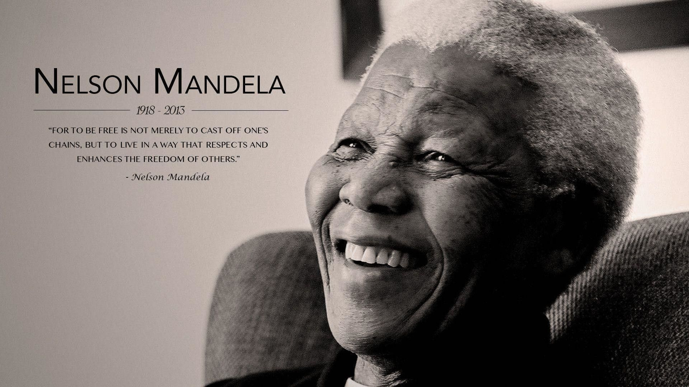

Mr Nelson Rolihlahla Mandela
The brave man is not he who does not feel afraid, but he who conquers that fear.

Nelson Mandela's photo with one of his quotes written.
Here is the timeline of Mr Nelson Mandela's life:
- 1918 July 18: Born Rolihlahla Mandela at Mvezo in the Transkei
- 1925: Attends primary school near Qunu (receives the name ‘Nelson’ from a teacher)
- 1930: Father dies. Entrusted to Thembu Regent Jongintaba Dalindyebo at the age of 12 While his autobiography Long Walk to Freedom places Mandela's father’s death in 1927, historical evidence shows it must have been later, most likely 1930. In fact, the original Long Walk to Freedom manuscript (written on Robben Island) states the year as 1930.
- 1934: Undergoes initiation; Attends Clarkebury Boarding Institute in Engcobo
- 1937: Attends Healdtown, the Wesleyan College at Fort Beaufort
- 1939: Enrols at the University College of Fort Hare, in Alice
- 1940: Expelled
- 1941: Escapes an arranged marriage; becomes a mine security officer; starts articles at the law firm Witkin, Sidelsky & Eidelman
- 1942: Completes BA through the University of South Africa (UNISA)
- 1942: Begins to attend African National Congress (ANC) meetings informally
- 1943: Graduates with BA from Fort Hare; Enrols for an LLB at Wits University
- 1944: Co-founds the ANC Youth League (ANCYL); marries Evelyn Ntoko Mase – they have four children: Thembekile (1945); Makaziwe (1947 – who dies after nine months); Makgatho (1950); Makaziwe (1954)
- 1948: Elected national secretary of the ANCYL
- 1951: Elected President of the ANCYL
- 1952: Defiance Campaign begins; Arrested and charged for violating the Suppression of Communism Act; Elected Transvaal ANC President; Convicted with J.S Moroka, Walter Sisulu and 17 others under the Suppression of Communism Act; Sentenced to nine months imprisonment with hard labour, suspended for two years; Elected first of ANC deputy presidents; Opens law firm with Oliver Tambo - the only black law firm in Johannesburg in the 1950s
- 1953: Devises the M-Plan for the ANC’s future underground operations
- 1955 June 26: Watches as the Congress of the People at Kliptown adopts the Freedom Charter
- 1956 December 5: Arrested and later joins 155 others on trial for teason. All are acquitted by 29 March 1961
- 1958: Divorces Evelyn Mase; Marries Nomzamo Winnie Madikizela – they have two daughters: Zenani (1959) and Zindzi (1960)
- 1960: Sharpeville Massacre.
A State of Emergency is imposed and he is among thousands detained.
The ANC is banned. - 1960: Goes underground; Umkhonto weSizwe (MK) is formed
- 1962: Leaves the country for military training and to garner support for the ANC.
Returns to South Africa.
Arrested near Howick in KwaZulu-Natal.
Sentenced to five years in prison for incitement and leaving the country without a passport. - 1963: Sent to Robben Island.
Returned to Pretoria Local Prison.
Appears in court for the first time in what becomes known as the Rivonia Trial, with Walter Sisulu, Denis Goldberg, Govan Mbeki, Ahmed Kathrada, Lionel 'Rusty' Bernstein, Raymond Mhlaba, James Kantor, Elias Motsoaledi and Andrew Mlangeni.
Pleads not guilty to sabotage in the Rivonia Trial. - 1964: James Kantor discharged and released.
All except Rusty Bernstein are convicted and sentenced to life.
Arrives on Robben Island. - 1969: Thembekile is killed in a car accident
- 1982: Mandela, Sisulu, Raymond Mhlaba and Andrew Mlangeni and later Ahmed Kathrada are sent to Pollsmoor Prison
- 1985: Rejects, through his daughter, Zindzi, South African President PW Botha's offer to release him if he renounces violence.
Admitted to the Volks Hospital for prostate surgery.
Discharged from Volks Hospital and returned to Pollsmoor Prison. - 1988: Admitted to Tygerberg Hospital where he is diagnosed with tuberculosis.
Admitted to Constantiaberg MediClinic.
Moved to Victor Verster Prison in Paarl where he is held for 14 months in a cottage. - 1990: ANC is unbanned.
Released.
Elected ANC Deputy President. - 1993: Awarded the Nobel Peace Prize with President FW de Klerk
- 1994: Votes for the first time in his life.
Elected by Parliament as first president of a democratic South Africa.
Inaugurated as President of the Republic of South Africa.
Launches his autobiography Long Walk to Freedom. - 1995: Establishes the Nelson Mandela Children's Fund
- 1996: Divorces Winnie Mandela
- 1998: Marries Graça Machel on his 80th birthday
- 1999: Steps down after one term as President, establishes the Nelson Mandela Foundation
- 2001: Diagnosed with prostate cancer
- 2003: Establishes the Mandela Rhodes Foundation
- 2004: Announces that he will be stepping down from public life
- 2005: Announces that his eldest son Makgatho had died of AIDS
- 2007: Attends the installation of his grandson Mandla as chief of the Mvezo Traditional Council
- 2008: Asks future generations to continue the fight for social justice
- 2009: Votes for the fourth time in his life; Attends the inauguration of President Jacob Zuma on 9 May and witnesses Zuma's first State of the Nation address; Turns 91
- 2010: Formally presented with the Fifa World Cup trophy before it embarks on a tour of South Africa.
His great-granddaughter Zenani is killed in a car accident.
Attends the funeral of his great-granddaughter Zenani.
Makes a surprise appearance at the final of the Fifa World Cup in Soweto.
Celebrates his 92nd birthday at home in Johannesburg with family and friends.
His second book Conversations with Myself is published.
Meets the South African and American football teams that played in the Nelson Mandela Challenge match. - 2011: Admitted to hospital in Johannesburg. Discharged after two nights.
Votes in the local government elections.
His book Nelson Mandela By Himself: The Authorised Book of Quotations is launched.
Visited at home by American First Lady Michelle Obama and her daughters Sasha and Malia.
Celebrates his 93rd birthday with his family in Qunu, Eastern Cape.
Officially counted in South Africa’s Census 2011.
Spends Christmas with family in Qunu, Transkei. - 2012: Admitted to hospital.
Discharged from hospital.
Celebrates his 94th birthday with his family in Qunu, Transkei.
Admitted to hospital.
Discharged from hospital. - 2013: Spends New Year’s Day with members of his family in Johannesburg.
Admitted to hospital.
Discharged from hospital.
Admitted to the hospital.
Discharged from hospital.
Admitted to hospital.
Spends his 95th birthday in hospital.
Discharged from hospital.
December 5:Passes away at home in Johannesburg.